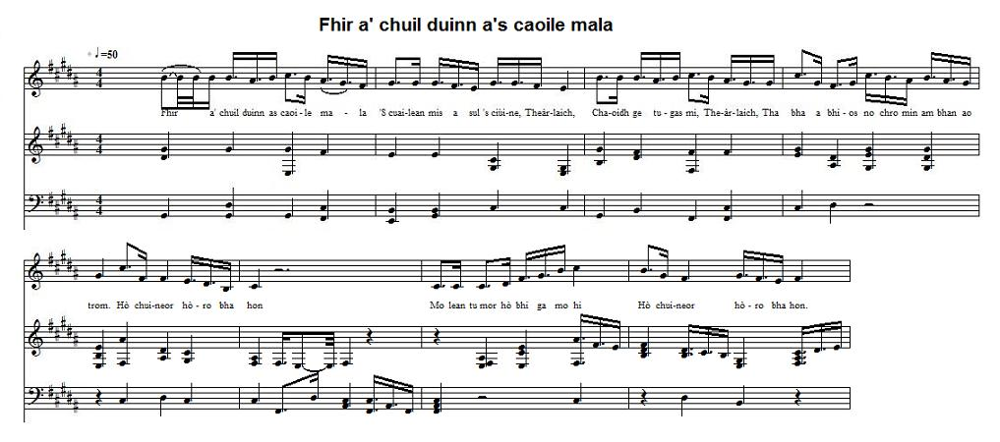

Fhir a' Chùil Duinn as Caoile Mala
Brown-haired lad with thin eyebrows - L'Homme brun aux beaux sourcils
Author unknown

Tune- Mélodie
as sung by the Rev. William Matheson in August 1955Sequenced by Christian Souchon


|
This love song, sung by Rev William Matheson, was recorded, in succession, by John McInnes, James Ross, and Ian Paterson, in August 1955, December 1956, and July 1976 for the "School of Scottish Studies" of the University of Edinburgh sound track collection, under several track ID: 20653, 23010, 101512 and published online at the "Tobar an Dualchais" site. The comment to the first record reads: "This is a woman's love song for Charles. She loves him deeply though she can never have him." "In this love song a woman is sad because she is not with her beloved." so that we may wonder if the easily recognizable name "Teàrlach" in the song refers or not to Prince Charles Edward Stuart. Unfortunately "Tobar an Dualchais" does not include transcriptions of the lyrics sung, which might perhaps have allowed us to get it clear. The longest record encompasses two 4-line verses and 3-line chorusses. |
Geàrr-chunntas: Here is an attempt at phonetic rendering: 1. Fhir a' chuil duinn as caoile mala 'S cuailean mis a sul is ciùine, Theàrlaich, Chaoidh ge tugas mi, Theàrlaich, Tha bha a bhios no chro min am bhan ao trom. Sèist Hò chuineor hòro bha hon Mo lean tu mor hò bhi ga mo hi Hò chuineor hòro bha hon. 2. Choma mi songhe, Theàrlaich, Ti le glaun 's bhia unde nach ti, Saumdeam chim pe's chi bha u, Is gemma si ines sinis bamacel. 3. Mo geal heno mo cho gelu Luai e chule tse chune tlachiu Ma se 's ti Theàrlach cal ne sinia Gan duc mi geal Theàrlaich, a bha nia a bhianam. |
Cette romance interprétée par le Rév. William Matheson, a été enregistrée successivement par John McInnes, James Ross et Ian Paterson, en août 1955, décembre 1956 et juillet 1976 pour la phonothèque de la "School of Scottish Studies" de l'Université d'Edimbourg, sous plusieurs identifiants: 20653, 23010, 101512 et mise en ligne sur le site "Tobar an Dualchais". Les commentaires varient d'un enregistrement à l'autre: "C'est le chant d'amour qu'une dame adresse à Charles. Elle l'aime profondément, bien qu'il lui soit inaccessible." "Dans cette romance une dame se lamente de ne pas être avec son bienaimé." De sorte que l'on peut se demander si le nom "Teàrlach", aisément reconnaissable dans les enregistrements se rapporte vraiment au Prince Charles Edouard Stuart. Il est regrettable que "Tobar an Dualchais" ne donne jamais a transcription des paroles chantées, qui permettrait peut-être de lever le doute. L'enregistrement le plus long comporte 3 quatrains suivis, chacun, du refrain. |